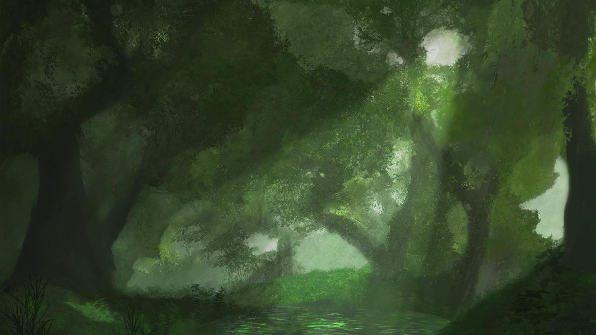

CONCEPT PAINTINGS
ENVIRONMENTAL
CONCEPT PAINTINGS
A collection of hand-painted environmental concept pieces built to explore atmosphere, mood, and visual storytelling through layered color and texture.

PROJECT OVERVIEW
BACK TO HOME →Objective
These concept paintings were created to communicate mood and environment with a strong sense of place. Each piece focuses on visual clarity, immersive atmosphere, and a story-driven composition.
Approach
I used layered color, texture, and strong focal points to build scenes that feel cinematic and believable. The work balances painterly detail with clean design choices that support the overall mood.
Impact
The collection helps present a more narrative and atmospheric side of my design work, while also reinforcing my interest in worldbuilding and environmental concept development.

GALLERY
SEE MORE WORK